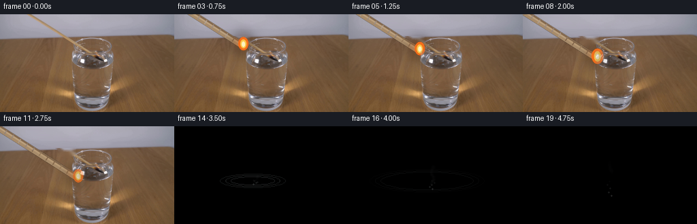
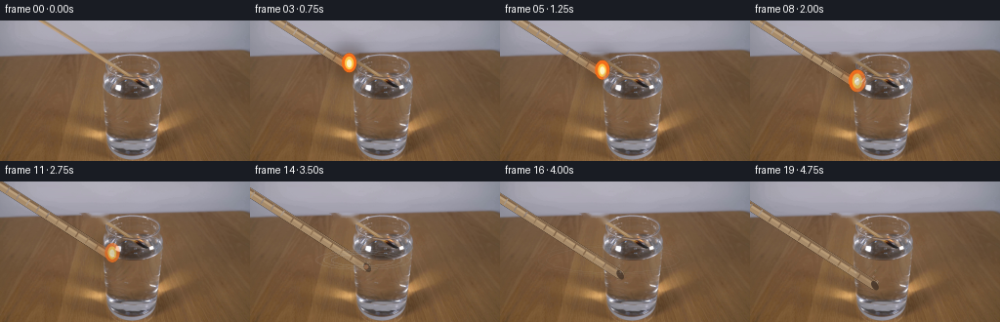
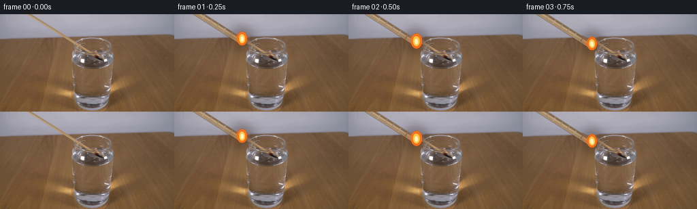
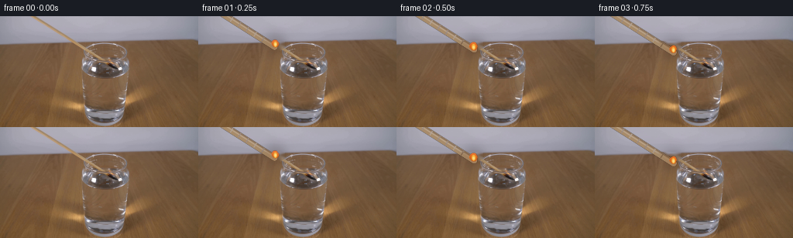
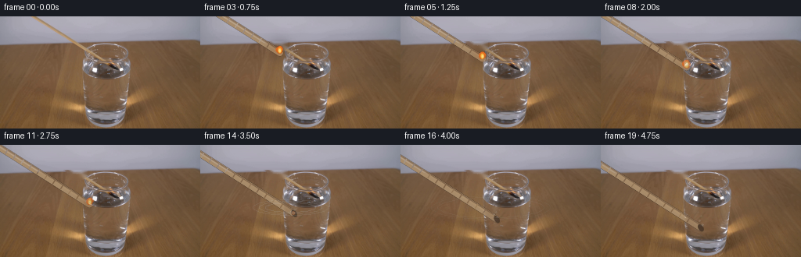

CODING AGENTS AS PIXEL WORLD MODELS
traex/DeepSeek-V4.1-Flash · 0110
点击播放 · 原生 RGB 像素
逐轮保存的候选
回放视频、检查图与代码变化。
每份候选均可单独播放。实际图片检查记录在下方工具轨迹中。
候选 01播放与检查图
点击播放 · 原生 RGB 像素

展开代码变化
--- 上一保存版本
+++ 本次保存版本
@@ -0,0 +1,377 @@
+from pathlib import Path
+
+import cv2
+import numpy as np
+from PIL import Image
+
+import artifact_io
+
+
+ROOT = Path(__file__).resolve().parent
+W, H, N = 256, 144, 20
+FPS = 4.0
+SS = 4 # Supersampling factor for the animated match and flame.
+
+
+def _soft_mask(mask, radius=1.0):
+ mask = mask.astype(np.float32)
+ if radius <= 0:
+ return mask
+ return cv2.GaussianBlur(mask, (0, 0), radius)
+
+
+def _match_removal_mask():
+ yy, xx = np.mgrid[:H, :W]
+ center = 40.0 + 1.57 * yy
+ stick = (yy <= 34) & (np.abs(xx - center) <= 7.0)
+ head = (((xx - 98.0) / 13.0) ** 2 + ((yy - 35.5) / 9.0) ** 2) <= 1.0
+ return (stick | head).astype(np.uint8) * 255
+
+
+def make_clean_plate(frame):
+ mask = _match_removal_mask()
+ mask = cv2.dilate(mask, np.ones((3, 3), np.uint8), iterations=1)
+ plate = cv2.inpaint(frame, mask, 4, cv2.INPAINT_TELEA)
+
+ # The wall above the table edge is smooth, so horizontal interpolation
+ # removes the inpaint smear and preserves the original lighting gradient.
+ for y in range(0, 32):
+ xs = np.flatnonzero(mask[y])
+ if not len(xs):
+ continue
+ x0, x1 = int(xs.min()), int(xs.max())
+ left = max(0, x0 - 2)
+ right = min(W - 1, x1 + 2)
+ for c in range(3):
+ plate[y, x0:x1 + 1, c] = np.linspace(
+ frame[y, left, c], frame[y, right, c], x1 - x0 + 1
+ ).round().astype(np.uint8)
+ return plate
+
+
+def _glass_mask():
+ yy, xx = np.mgrid[:H, :W]
+ body = (
+ (yy >= 54)
+ & (yy <= 126)
+ & (xx >= (105.5 + 0.055 * (yy - 54)))
+ & (xx <= (166.0 - 0.12 * (yy - 54)))
+ )
+ bottom = (((xx - 135.0) / 25.0) ** 2 + ((yy - 125.0) / 8.0) ** 2) <= 1.0
+ return (body | bottom).astype(np.float32)
+
+
+def _water_mask():
+ yy, xx = np.mgrid[:H, :W]
+ return (
+ (yy >= 79)
+ & (yy <= 124)
+ & (xx >= 111.0)
+ & (xx <= 161.0)
+ & (((xx - 136.0) / 27.0) ** 2 + ((yy - 82.0) / 45.0) ** 2 <= 1.0)
+ ).astype(np.float32)
+
+
+def _draw_match_and_flame(head_x, head_y, frame_index):
+ canvas = np.zeros((H * SS, W * SS, 4), dtype=np.uint8)
+
+ direction = np.array([1.57, 1.0], dtype=np.float32)
+ direction /= np.linalg.norm(direction)
+ normal = np.array([-direction[1], direction[0]], dtype=np.float32)
+ head = np.array([head_x, head_y], dtype=np.float32)
+ tail = head - direction * 255.0
+
+ def p(point):
+ return tuple(np.round(point * SS).astype(int))
+
+ base_color = (167, 139, 106)
+ edge_dark = (129, 102, 76)
+ edge_light = (190, 161, 123)
+
+ cv2.line(canvas, p(tail), p(head), (*base_color, 255), 9 * SS, cv2.LINE_AA)
+ cv2.line(
+ canvas,
+ p(tail - normal * 2.9),
+ p(head - normal * 2.9),
+ (*edge_dark, 255),
+ 2 * SS,
+ cv2.LINE_AA,
+ )
+ cv2.line(
+ canvas,
+ p(tail - normal * 0.7),
+ p(head - normal * 0.7),
+ (*edge_light, 235),
+ 2 * SS,
+ cv2.LINE_AA,
+ )
+
+ # Sparse longitudinal grain marks echo the wooden texture in the source.
+ length = 248.0
+ for s in np.arange(9.0, length, 12.0):
+ center = tail + direction * s
+ if not (-8 <= center[0] <= W + 8 and -8 <= center[1] <= H + 8):
+ continue
+ shade = (141, 113, 84) if int(s / 12.0) % 3 else (180, 151, 113)
+ cv2.line(
+ canvas,
+ p(center - normal * 3.0),
+ p(center + normal * 2.8),
+ (*shade, 120),
+ max(1, SS),
+ cv2.LINE_AA,
+ )
+
+ # The head is visible as a slightly darker wooden knot once the flame dies.
+ submerge = float(np.clip((head_y - 79.0) / 7.0, 0.0, 1.0))
+ if submerge > 0.15:
+ knot_alpha = int(210 * np.clip((submerge - 0.15) / 0.55, 0.0, 1.0))
+ cv2.ellipse(
+ canvas,
+ p(head + direction * 1.0),
+ (int(3.2 * SS), int(5.0 * SS)),
+ -32,
+ 0,
+ 360,
+ (48, 37, 30, knot_alpha),
+ -1,
+ cv2.LINE_AA,
+ )
+
+ contact_t = (79.0 - 36.0) / (70.0 / 19.0)
+ age = frame_index - contact_t
+ flame_alive = 1.0 - smoothstep(0.0, 1.8, age)
+ if flame_alive > 0.01:
+ flicker = 1.0 + 0.075 * np.sin(2.0 * np.pi * 2.1 * frame_index / FPS + 0.4)
+ sway = 0.9 * np.sin(2.0 * np.pi * 1.25 * frame_index / FPS)
+ center = head + np.array([sway, -4.2], dtype=np.float32)
+ rx = 8.2 * flicker * (0.85 + 0.15 * flame_alive)
+ ry = 10.8 * flicker * (0.86 + 0.14 * flame_alive)
+
+ glow = np.zeros((H * SS, W * SS, 4), dtype=np.uint8)
+ cv2.ellipse(
+ glow,
+ p(center),
+ (int(17 * SS), int(18 * SS)),
+ 0,
+ 0,
+ 360,
+ (255, 115, 23, int(82 * flame_alive)),
+ -1,
+ cv2.LINE_AA,
+ )
+ sigma = 7.5 * SS
+ blurred = cv2.GaussianBlur(glow[:, :, :3], (0, 0), sigma)
+ glow[:, :, :3] = blurred
+ glow[:, :, 3] = cv2.GaussianBlur(glow[:, :, 3], (0, 0), sigma)
+ canvas = _alpha_over(canvas, glow)
+
+ cv2.ellipse(
+ canvas,
+ p(center + np.array([0.2, 0.4])),
+ (int(rx * SS), int(ry * SS)),
+ 0,
+ 0,
+ 360,
+ (250, 111, 24, int(242 * flame_alive)),
+ -1,
+ cv2.LINE_AA,
+ )
+ cv2.ellipse(
+ canvas,
+ p(center + np.array([0.0, 0.7])),
+ (int(4.8 * flicker * SS), int(7.1 * flicker * SS)),
+ -2,
+ 0,
+ 360,
+ (255, 201, 72, int(248 * flame_alive)),
+ -1,
+ cv2.LINE_AA,
+ )
+ cv2.ellipse(
+ canvas,
+ p(center + np.array([0.1, 1.1])),
+ (int(2.5 * SS), int(4.1 * SS)),
+ -2,
+ 0,
+ 360,
+ (255, 247, 196, int(250 * flame_alive)),
+ -1,
+ cv2.LINE_AA,
+ )
+
+ if 0.0 < age < 2.7:
+ ember = float(np.clip(1.0 - (age - 0.7) / 2.0, 0.0, 1.0))
+ if ember > 0:
+ cv2.circle(
+ canvas,
+ p(head),
+ int(2.2 * SS),
+ (232, 89, 25, int(220 * ember)),
+ -1,
+ cv2.LINE_AA,
+ )
+
+ small = cv2.resize(canvas, (W, H), interpolation=cv2.INTER_AREA)
+ return small
+
+
+def _alpha_over(bottom, top):
+ a = top[:, :, 3:4].astype(np.float32) / 255.0
+ out = top[:, :, :3].astype(np.float32) * a + bottom[:, :, :3].astype(np.float32) * (1.0 - a)
+ out_a = top[:, :, 3].astype(np.float32) + bottom[:, :, 3].astype(np.float32) * (1.0 - a[:, :, 0])
+ return np.dstack([np.clip(out, 0, 255), np.clip(out_a, 0, 255)]).astype(np.uint8)
+
+
+def smoothstep(edge0, edge1, x):
+ x = np.clip((x - edge0) / (edge1 - edge0), 0.0, 1.0)
+ return x * x * (3.0 - 2.0 * x)
+
+
+def _composite_rgba(frame, layer, glass_soft):
+ alpha = layer[:, :, 3].astype(np.float32) / 255.0
+ alpha *= 1.0 - 0.28 * glass_soft
+ rgb = layer[:, :, :3].astype(np.float32)
+ return (
+ rgb * alpha[:, :, None] + frame.astype(np.float32) * (1.0 - alpha[:, :, None])
+ ).clip(0, 255).astype(np.uint8)
+
+
+def _water_distortion(frame, age, contact_x):
+ if age <= 0.0:
+ return frame
+ yy, xx = np.mgrid[:H, :W].astype(np.float32)
+ region = (yy >= 75.0) & (yy <= 86.0) & (xx >= 106.0) & (xx <= 166.0)
+ if not np.any(region):
+ return frame
+ decay = np.exp(-age / 4.5)
+ local = np.exp(-np.abs(xx - contact_x) / 25.0)
+ dx = (1.55 * np.sin((yy - 79.0) * 1.15 + age * 4.4) * decay * local).astype(np.float32)
+ dy = (0.45 * np.sin((xx - contact_x) * 0.27 + age * 3.0) * decay * local).astype(np.float32)
+ map_x = (xx + dx).astype(np.float32)
+ map_y = (yy + dy).astype(np.float32)
+ warped = cv2.remap(frame, map_x, map_y, interpolation=cv2.INTER_LINEAR, borderMode=cv2.BORDER_REFLECT)
+ blend = region.astype(np.float32) * 0.75
+ return (
+ warped.astype(np.float32) * blend[:, :, None]
+ + frame.astype(np.float32) * (1.0 - blend[:, :, None])
+ ).round().clip(0, 255).astype(np.uint8)
+
+
+def _draw_water_effects(frame, head_x, head_y, age, frame_index):
+ if age <= 0.0:
+ return frame
+ out = frame.astype(np.float32)
+ overlay = np.zeros_like(out)
+ alpha = np.zeros((H, W), dtype=np.float32)
+
+ contact_x = 97.0 + (30.0 / 19.0) * ((79.0 - 36.0) / (70.0 / 19.0))
+ contact_x = float(contact_x)
+ for k, delay in enumerate((0.0, 0.45, 0.9)):
+ a = age - delay
+ if a <= 0.0:
+ continue
+ radius = 3.0 + 8.5 * a
+ fade = max(0.0, 1.0 - a / 4.8)
+ color = np.array([199, 211, 214], dtype=np.float32)
+ layer = np.zeros((H, W), dtype=np.float32)
+ cv2.ellipse(
+ layer,
+ (int(round(contact_x)), 80),
+ (int(round(radius * 2.1)), int(round(radius * 0.42))),
+ 0,
+ 0,
+ 360,
+ 1.0,
+ 1,
+ cv2.LINE_AA,
+ )
+ layer = cv2.GaussianBlur(layer, (0, 0), 0.45)
+ a_layer = layer * (0.22 * fade)
+ overlay = overlay * (1.0 - a_layer[:, :, None]) + color * a_layer[:, :, None]
+ alpha = np.maximum(alpha, a_layer)
+
+ # A few small bubbles rise from the submerged head toward the surface.
+ if head_y > 82.0:
+ for i in range(5):
+ phase = (age * 0.48 + i * 0.19) % 1.0
+ bx = head_x + 3.5 * np.sin(i * 1.7 + age * 2.1)
+ by = head_y - 2.0 - phase * max(2.0, head_y - 80.0)
+ rad = 0.8 + 0.45 * ((i + frame_index) % 2)
+ layer = np.zeros((H, W), dtype=np.float32)
+ cv2.circle(layer, (int(round(bx)), int(round(by))), int(round(rad)), 1.0, -1, cv2.LINE_AA)
+ a_layer = cv2.GaussianBlur(layer, (0, 0), 0.35) * (0.18 * (1.0 - phase))
+ overlay = overlay * (1.0 - a_layer[:, :, None]) + np.array([221, 228, 230]) * a_layer[:, :, None]
+
+ return np.clip(overlay, 0, 255).astype(np.uint8)
+
+
+def _draw_smoke(frame, head_x, head_y, age, frame_index):
+ if age < 0.8:
+ return frame
+ out = frame.astype(np.float32)
+ contact_t = (79.0 - 36.0) / (70.0 / 19.0)
+ for i in range(9):
+ emit = contact_t + 0.65 + i * 0.32
+ a = frame_index - emit
+ if a <= 0:
+ continue
+ rise = 7.0 * a + 0.65 * a * a
+ sx = head_x + 2.0 * np.sin(0.72 * a + i * 1.31) + 0.32 * a
+ sy = head_y - rise
+ if sy < 39:
+ continue
+ rad = 0.8 + 0.48 * a
+ fade = max(0.0, 1.0 - a / 5.8) * min(1.0, a / 0.8)
+ layer = np.zeros((H, W), dtype=np.float32)
+ cv2.circle(layer, (int(round(sx)), int(round(sy))), int(round(rad)), 1.0, -1, cv2.LINE_AA)
+ layer = cv2.GaussianBlur(layer, (0, 0), 1.1)
+ strength = 0.085 * fade
+ smoke_color = np.array([139, 143, 146], dtype=np.float32)
+ out = out * (1.0 - layer[:, :, None] * strength) + smoke_color * layer[:, :, None] * strength
+ return np.clip(out, 0, 255).astype(np.uint8)
+
+
+def _restore_glass_highlights(frame, base):
+ yy, xx = np.mgrid[:H, :W]
+ glass = (xx >= 104) & (xx <= 167) & (yy >= 52) & (yy <= 126)
+ lum = base.astype(np.float32).mean(axis=2)
+ sat = base.max(axis=2).astype(np.float32) - base.min(axis=2).astype(np.float32)
+ highlights = glass & (lum > 158) & (sat < 34)
+ soft = cv2.GaussianBlur(highlights.astype(np.float32), (0, 0), 0.55)
+ a = (soft * 0.42)[:, :, None]
+ return (
+ base.astype(np.float32) * a + frame.astype(np.float32) * (1.0 - a)
+ ).clip(0, 255).astype(np.uint8)
+
+
+def generate():
+ first = np.array(Image.open(ROOT / "first_frame.png").convert("RGB"), dtype=np.uint8)
+ assert first.shape == (H, W, 3)
+ clean = make_clean_plate(first)
+ glass = _glass_mask()
+ glass_soft = _soft_mask(glass, 1.2)
+ frames = np.empty((N, H, W, 3), dtype=np.uint8)
+ frames[0] = first
+
+ for i in range(1, N):
+ head_y = 36.0 + (70.0 / 19.0) * i
+ head_x = 97.0 + (30.0 / 19.0) * i
+ contact_t = (79.0 - 36.0) / (70.0 / 19.0)
+ water_age = max(0.0, i - contact_t)
+
+ frame = _water_distortion(clean, water_age, 113.0)
+ layer = _draw_match_and_flame(head_x, head_y, i)
+ frame = _composite_rgba(frame, layer, glass_soft)
+ frame = _restore_glass_highlights(frame, first)
+ frame = _draw_water_effects(frame, head_x, head_y, water_age, i)
+ frame = _draw_smoke(frame, head_x, head_y, water_age, i)
+ frames[i] = frame
+
+ frames[0] = first
+ artifact_io.save(frames, ROOT)
+ return frames
+
+
+if __name__ == "__main__":
+ generate()
候选 02播放与检查图
点击播放 · 原生 RGB 像素


展开代码变化
--- 上一保存版本
+++ 本次保存版本
@@ -262,7 +262,7 @@
if age <= 0.0:
return frame
out = frame.astype(np.float32)
- overlay = np.zeros_like(out)
+ overlay = out.copy()
alpha = np.zeros((H, W), dtype=np.float32)
contact_x = 97.0 + (30.0 / 19.0) * ((79.0 - 36.0) / (70.0 / 19.0))
候选 03播放与检查图
点击播放 · 原生 RGB 像素

展开代码变化
--- 上一保存版本
+++ 本次保存版本
@@ -88,21 +88,21 @@
edge_dark = (129, 102, 76)
edge_light = (190, 161, 123)
- cv2.line(canvas, p(tail), p(head), (*base_color, 255), 9 * SS, cv2.LINE_AA)
+ cv2.line(canvas, p(tail), p(head), (*base_color, 255), 8 * SS, cv2.LINE_AA)
cv2.line(
canvas,
p(tail - normal * 2.9),
p(head - normal * 2.9),
- (*edge_dark, 255),
- 2 * SS,
+ (*edge_dark, 210),
+ 1 * SS,
cv2.LINE_AA,
)
cv2.line(
canvas,
p(tail - normal * 0.7),
p(head - normal * 0.7),
- (*edge_light, 235),
- 2 * SS,
+ (*edge_light, 180),
+ 1 * SS,
cv2.LINE_AA,
)
@@ -166,36 +166,42 @@
glow[:, :, 3] = cv2.GaussianBlur(glow[:, :, 3], (0, 0), sigma)
canvas = _alpha_over(canvas, glow)
- cv2.ellipse(
- canvas,
- p(center + np.array([0.2, 0.4])),
- (int(rx * SS), int(ry * SS)),
- 0,
- 0,
- 360,
- (250, 111, 24, int(242 * flame_alive)),
- -1,
- cv2.LINE_AA,
- )
+ # Draw a small, naturally tapered teardrop rather than a neon ellipse.
+ for band in range(9):
+ t = band / 8.0
+ cy = center[1] + ry * (0.58 - 1.22 * t)
+ width = rx * (0.42 + 0.64 * np.sin(np.pi * (0.10 + 0.82 * t)))
+ shade = np.array([245, 111, 29], dtype=np.float32) * (0.87 + 0.13 * t)
+ cv2.ellipse(
+ canvas,
+ p(np.array([center[0] + 0.35 * np.sin(t * 4.2 + frame_index), cy])),
+ (max(1, int(width * SS)), max(1, int(ry * 0.20 * SS))),
+ 0,
+ 0,
+ 360,
+ (*np.round(shade).astype(int).tolist(), int(218 * flame_alive)),
+ -1,
+ cv2.LINE_AA,
+ )
cv2.ellipse(
canvas,
p(center + np.array([0.0, 0.7])),
- (int(4.8 * flicker * SS), int(7.1 * flicker * SS)),
+ (int(4.2 * flicker * SS), int(6.2 * flicker * SS)),
-2,
0,
360,
- (255, 201, 72, int(248 * flame_alive)),
+ (252, 181, 57, int(244 * flame_alive)),
-1,
cv2.LINE_AA,
)
cv2.ellipse(
canvas,
p(center + np.array([0.1, 1.1])),
- (int(2.5 * SS), int(4.1 * SS)),
+ (int(2.1 * SS), int(3.3 * SS)),
-2,
0,
360,
- (255, 247, 196, int(250 * flame_alive)),
+ (255, 224, 137, int(244 * flame_alive)),
-1,
cv2.LINE_AA,
)
候选 04播放与检查图
候选 05播放与检查图
点击播放 · 原生 RGB 像素


展开代码变化
--- 上一保存版本
+++ 本次保存版本
@@ -145,18 +145,18 @@
flicker = 1.0 + 0.075 * np.sin(2.0 * np.pi * 2.1 * frame_index / FPS + 0.4)
sway = 0.9 * np.sin(2.0 * np.pi * 1.25 * frame_index / FPS)
center = head + np.array([sway, -4.2], dtype=np.float32)
- rx = 8.2 * flicker * (0.85 + 0.15 * flame_alive)
- ry = 10.8 * flicker * (0.86 + 0.14 * flame_alive)
+ rx = 5.0 * flicker * (0.85 + 0.15 * flame_alive)
+ ry = 6.5 * flicker * (0.86 + 0.14 * flame_alive)
glow = np.zeros((H * SS, W * SS, 4), dtype=np.uint8)
cv2.ellipse(
glow,
p(center),
- (int(17 * SS), int(18 * SS)),
- 0,
- 0,
- 360,
- (255, 115, 23, int(82 * flame_alive)),
+ (int(11 * SS), int(12 * SS)),
+ 0,
+ 0,
+ 360,
+ (255, 115, 23, int(64 * flame_alive)),
-1,
cv2.LINE_AA,
)
@@ -186,7 +186,7 @@
cv2.ellipse(
canvas,
p(center + np.array([0.0, 0.7])),
- (int(4.2 * flicker * SS), int(6.2 * flicker * SS)),
+ (int(2.6 * flicker * SS), int(3.8 * flicker * SS)),
-2,
0,
360,
@@ -197,7 +197,7 @@
cv2.ellipse(
canvas,
p(center + np.array([0.1, 1.1])),
- (int(2.1 * SS), int(3.3 * SS)),
+ (int(1.3 * SS), int(2.0 * SS)),
-2,
0,
360,
候选 06播放与检查图
点击播放 · 原生 RGB 像素

展开代码变化
--- 上一保存版本
+++ 本次保存版本
@@ -22,9 +22,9 @@
def _match_removal_mask():
yy, xx = np.mgrid[:H, :W]
- center = 40.0 + 1.57 * yy
- stick = (yy <= 34) & (np.abs(xx - center) <= 7.0)
- head = (((xx - 98.0) / 13.0) ** 2 + ((yy - 35.5) / 9.0) ** 2) <= 1.0
+ center = 40.0 + 1.75 * yy
+ stick = (yy <= 65) & (np.abs(xx - center) <= 7.0)
+ head = (((xx - 145.0) / 12.0) ** 2 + ((yy - 60.5) / 8.0) ** 2) <= 1.0
return (stick | head).astype(np.uint8) * 255
@@ -75,11 +75,11 @@
def _draw_match_and_flame(head_x, head_y, frame_index):
canvas = np.zeros((H * SS, W * SS, 4), dtype=np.uint8)
- direction = np.array([1.57, 1.0], dtype=np.float32)
+ direction = np.array([1.75, 1.0], dtype=np.float32)
direction /= np.linalg.norm(direction)
normal = np.array([-direction[1], direction[0]], dtype=np.float32)
head = np.array([head_x, head_y], dtype=np.float32)
- tail = head - direction * 255.0
+ tail = head - direction * 235.0
def p(point):
return tuple(np.round(point * SS).astype(int))
@@ -138,13 +138,13 @@
cv2.LINE_AA,
)
- contact_t = (79.0 - 36.0) / (70.0 / 19.0)
+ contact_t = (79.0 - 60.5) / 1.35
age = frame_index - contact_t
flame_alive = 1.0 - smoothstep(0.0, 1.8, age)
if flame_alive > 0.01:
flicker = 1.0 + 0.075 * np.sin(2.0 * np.pi * 2.1 * frame_index / FPS + 0.4)
- sway = 0.9 * np.sin(2.0 * np.pi * 1.25 * frame_index / FPS)
- center = head + np.array([sway, -4.2], dtype=np.float32)
+ sway = 0.55 * np.sin(2.0 * np.pi * 1.25 * frame_index / FPS)
+ center = head + np.array([sway - 0.4, -4.1], dtype=np.float32)
rx = 5.0 * flicker * (0.85 + 0.15 * flame_alive)
ry = 6.5 * flicker * (0.86 + 0.14 * flame_alive)
@@ -271,8 +271,7 @@
overlay = out.copy()
alpha = np.zeros((H, W), dtype=np.float32)
- contact_x = 97.0 + (30.0 / 19.0) * ((79.0 - 36.0) / (70.0 / 19.0))
- contact_x = float(contact_x)
+ contact_x = 145.0 + 0.18 * ((79.0 - 60.5) / 1.35)
for k, delay in enumerate((0.0, 0.45, 0.9)):
a = age - delay
if a <= 0.0:
@@ -316,7 +315,7 @@
if age < 0.8:
return frame
out = frame.astype(np.float32)
- contact_t = (79.0 - 36.0) / (70.0 / 19.0)
+ contact_t = (79.0 - 60.5) / 1.35
for i in range(9):
emit = contact_t + 0.65 + i * 0.32
a = frame_index - emit
@@ -361,9 +360,9 @@
frames[0] = first
for i in range(1, N):
- head_y = 36.0 + (70.0 / 19.0) * i
- head_x = 97.0 + (30.0 / 19.0) * i
- contact_t = (79.0 - 36.0) / (70.0 / 19.0)
+ head_y = 60.5 + 1.35 * i
+ head_x = 145.0 + 0.18 * i
+ contact_t = (79.0 - 60.5) / 1.35
water_age = max(0.0, i - contact_t)
frame = _water_distortion(clean, water_age, 113.0)
候选 07播放与检查图
可观测工具轨迹
实际执行的命令与返回图片。
命令 1exit 0
/bin/bash -c "pwd && rg --files -g '"'!*.mp4'"' -g '"'!*.mov'"' -g '"'!*.avi'"' | sort"
命令 2exit 0
/bin/bash -c "sed -n '1,240p' prompt.txt"
命令 3exit 0
/bin/bash -c "sed -n '1,280p' GENERATION_RULES.md"
命令 4exit 0
/bin/bash -c 'ls -lah && file first_frame.png 2>/dev/null || true && identify first_frame.png 2>/dev/null || true'
命令 5exit 0
/bin/bash -c "sed -n '1,260p' artifact_io.py"
命令 6exit 0
/bin/bash -c "sed -n '1,260p' player_template.html"
命令 7exit 0
/bin/bash -c "python - <<'PY'
from PIL import Image
import numpy as np
im=Image.open('first_frame.png').convert('RGB')
a=np.array(im)
print('size', im.size, 'shape', a.shape, 'dtype', a.dtype)
print('global min/max/mean', a.min(axis=(0,1)), a.max(axis=(0,1)), a.mean(axis=(0,1)))
# dominant colors quantized
q=(a//16)*16
cols,cnt=np.unique(q.reshape(-1,3),axis=0,return_counts=True)
idx=np.argsort(cnt)[-20:][::-1]
print('dominant 16-quantized colors:')
for i in idx: print(cols[i].tolist(), int(cnt[i]), round(cnt[i]/a.shape[0]/a.shape[1],3))
# row/col means every 8
print('row mean RGB:')
for y in range(0,144,8): print(y, np.round(a[y:y+8].mean((0,1)),1).tolist())
print('col mean RGB:')
for x in range(0,256,16): print(x, np.round(a[:,x:x+16].mean((0,1)),1).tolist())
PY"命令 8exit 0
/bin/bash -c "command -v chafa || true; command -v viu || true; command -v jp2 || true; command -v img2txt || true; command -v ffmpeg || true; python - <<'PY'
try:
import cv2; print('cv2',cv2.__version__)
except Exception as e: print('no cv2',e)
try:
import scipy; print('scipy',scipy.__version__)
except Exception as e: print('no scipy',e)
try:
import sklearn; print('sklearn',sklearn.__version__)
except Exception as e: print('no sklearn',e)
PY"命令 9exit 0
/bin/bash -c "python - <<'PY'
from PIL import Image
import numpy as np
im=np.array(Image.open('first_frame.png').convert('RGB'))
# adaptive-ish ASCII based luminance and chroma class, 128x72 blocks (2x2)
chars=' .:-=+*#%@'
for y in range(0,144,2):
row=''
for x in range(0,256,2):
b=im[y:y+2,x:x+2].mean((0,1))
lum=.2126*b[0]+.7152*b[1]+.0722*b[2]
if b[2]-b[0]>20: c='B' # blue-gray
elif b[0]-b[1]>25 and b[1]-b[2]>8: c='W' # warm wood
elif b[0]>b[1]+20 and b[1]>b[2]+10: c='w'
elif lum>220: c='@'
else: c=chars[min(9,int(lum/256*10))]
row+=c
print(row)
PY"命令 10exit 0
/bin/bash -c "python - <<'PY'
from PIL import Image
import numpy as np
im=np.array(Image.open('first_frame.png').convert('RGB'))
# downscale to 64x36 using area and ANSI truecolor blocks (upper half block per 2 y)
import sys
small=np.array(Image.fromarray(im).resize((64,36),Image.Resampling.BOX))
for y in range(36):
line=''
for x in range(64):
r,g,b=small[y,x]
line+=f'\\x1b[48;2;{r};{g};{b}m '
line+='\\x1b[0m'
print(line)
PY"命令 11exit 0
/bin/bash -c "python - <<'PY'
from PIL import Image
import numpy as np
im=np.array(Image.open('first_frame.png').convert('RGB')).astype(float)
# Print every 2 px block with class
for y in range(0,144,2):
row=''
for x in range(0,256,2):
r,g,b=im[y:y+2,x:x+2].mean((0,1)); lum=.2126*r+.7152*g+.0722*b; mx=max(r,g,b); mn=min(r,g,b)
if lum>225: c='@'
elif lum>190 and mx-mn<18: c='O'
elif r>g+25 and g>b+12 and lum>95: c='W'
elif r>g+18 and g>b+8 and lum>65: c='w'
elif r>g+14 and g>b+7: c='t'
elif b>r+8 and b>g+3: c='B'
elif lum<45: c='#'
elif lum<65: c='x'
elif lum<85: c='X'
elif lum<105: c='='
elif lum<125: c='-'
elif lum<145: c='.'
elif lum<165: c=':'
elif lum<185: c='+'
else: c='*'
row+=c
print(f'{y:03d} '+row)
PY"命令 12exit 0
/bin/bash -c "python - <<'PY'
from PIL import Image
import numpy as np
a=np.array(Image.open('first_frame.png').convert('RGB'))
# inspect exact crops as base64? print 6x6 average grid over area x=80..180,y=50..140
for name,(x0,y0,x1,y1) in {'glass':(90,45,180,140),'top':(100,0,160,45),'table':(0,120,256,144)}.items():
print('\\n',name)
crop=Image.fromarray(a[y0:y1,x0:x1]).resize(((x1-x0)//2,(y1-y0)//2),Image.Resampling.BOX)
# save for any external? list pixel rows compact class
c=np.array(crop)
for y in range(c.shape[0]):
print(''.join(' .:-=+*#%@'[min(9,int((.2126*r+.7152*g+.0722*b)/256*10))] for r,g,b in c[y]))
PY"命令 13exit 0
/bin/bash -c "python - <<'PY'
from PIL import Image
import numpy as np
a=np.array(Image.open('first_frame.png').convert('RGB'))
# bounding boxes for bright pixels and dark pixels, print coordinates by bands
for label,mask in [
('bright', (a.max(2)>245)),
('verybright',(a.min(2)>230)),
('orange',(a[:,:,0]>200)&(a[:,:,0]>a[:,:,1]*1.25)&(a[:,:,1]>a[:,:,2]*1.4)),
('dark',(a.max(2)<45)),
('black',(a.max(2)<28)),
]:
ys,xs=np.where(mask)
print(label, len(xs), 'bbox', (xs.min(),ys.min(),xs.max(),ys.max()) if len(xs) else None)
if len(xs):
print(' y hist', [(y,int(((ys>=y)&(ys<y+8)).sum())) for y in range(0,144,8)])
print(' x hist', [(x,int(((xs>=x)&(xs<x+16)).sum())) for x in range(0,256,16)])
# top object pixel rows, print ranges where non-background warm
print('top warm runs by row:')
for y in range(0,45):
m=(a[y,:,0]>a[y,:,2]+12)&(a[y,:,0]>90)
xs=np.where(m)[0]
if len(xs): print(y, xs.min(),xs.max(),len(xs), a[y,xs[len(xs)//2]].tolist())
PY"命令 14exit 0
/bin/bash -c "python - <<'PY'
from PIL import Image
import numpy as np
a=np.array(Image.open('first_frame.png').convert('RGB'))
for y in range(52,90):
xs=np.where(a[y,:,0]<120)[0]
runs=[]
if len(xs):
cuts=np.flatnonzero(np.diff(xs)>1)
for r in np.split(xs,cuts+1): runs.append((int(r[0]),int(r[-1]),len(r)))
print(y, runs)
PY"命令 15exit 0
/bin/bash -c "python - <<'PY'
from PIL import Image
import numpy as np
a=np.array(Image.open('first_frame.png').convert('RGB'))
# print 3x3 patch averages around top/glass transition in a compact table, HSV class
chars=' .:-=+*#%@'
for y in range(20,50,2):
row=''
for x in range(60,130,2):
b=a[y:y+2,x:x+2].mean((0,1)); r,g,bb=b
lum=.2126*r+.7152*g+.0722*bb
# classify color specifically
if r>g+30 and g>bb+20 and lum>150: c='F'
elif r>g+20 and g>bb+10: c='W'
elif r>g+10 and g>bb+4: c='w'
elif lum<50: c='#'
elif lum<80: c='X'
elif lum<110: c='='
elif lum<140: c='-'
elif lum<170: c='.'
elif lum<200: c=':'
elif lum<225: c='+'
else: c='@'
row+=c
print(f'{y:02d} '+row)
print('RGB samples')
for y in [20,25,29,30,31,32,33,34,35,36,40,45,50,60,70,80,100,120,135]:
print(y, [(x, a[y,x].tolist()) for x in [70,80,85,90,95,100,105,110,120,130,140,150,160,170,180]])
PY"命令 16exit 0
/bin/bash -c "python - <<'PY'
from PIL import Image
import numpy as np
a=np.array(Image.open('first_frame.png').convert('RGB')).astype(float)
# classification grid x 70..200, y 40..144, 2x2 cells
for y in range(40,144,2):
row=''
for x in range(70,200,2):
r,g,b=a[y:y+2,x:x+2].mean((0,1)); lum=.2126*r+.7152*g+.0722*b; sat=max(r,g,b)-min(r,g,b)
if lum>230: c='@'
elif sat<12 and lum>175: c='O'
elif sat<18 and lum>140: c='o'
elif sat<20 and lum>110: c='G'
elif sat<18 and lum>75: c='g'
elif sat<25 and lum>40: c='d'
elif sat<20: c='#'
elif r>g+30 and g>b+18 and lum>135: c='F'
elif r>g+22 and g>b+10 and lum>100: c='W'
elif r>g+14 and g>b+7 and lum>75: c='w'
elif r>g+10 and g>b+4: c='t'
elif b>r+7: c='B'
else: c='?'
row+=c
print(f'{y:03d} {row}')
PY"命令 17exit 0
/bin/bash -c "python - <<'PY'
from PIL import Image
import numpy as np
a=np.array(Image.open('first_frame.png').convert('RGB')).astype(float)
# grayscale cluster segmented via quantization, display each region values
# locate object contours by deviations from local robust background estimate (median filter)
import cv2
bg=cv2.medianBlur(a.astype(np.uint8),31).astype(float)
d=np.linalg.norm(a-bg,axis=2)
for th in [15,25,35,45,60]:
m=(d>th).astype(np.uint8)*255
print('th',th)
small=np.array(Image.fromarray(m).resize((128,72),Image.Resampling.BOX))
for y in range(72):
print(''.join('#' if v>128 else '.' for v in small[y]))
print()
PY"命令 18exit 0
/bin/bash -c "python - <<'PY'
from PIL import Image
import numpy as np, cv2
a=np.array(Image.open('first_frame.png').convert('RGB')).astype(np.float32)
g=cv2.cvtColor(a.astype(np.uint8),cv2.COLOR_RGB2GRAY).astype(float)
# sobel edges, blur, threshold
for blur,th in [(3,15),(3,25),(5,20)]:
e=np.hypot(cv2.Sobel(g,cv2.CV_64F,1,0,ksize=3),cv2.Sobel(g,cv2.CV_64F,0,1,ksize=3))
e=cv2.GaussianBlur(e,(blur,blur),0)
m=(e>th)
print('\\nEDGE',blur,th)
for y in range(0,144,2):
row=''
for x in range(0,256,2):
v=m[y:y+2,x:x+2].mean()
row += '@' if v>.7 else '+' if v>.3 else ' '
print(row)
PY"命令 19exit 0
/bin/bash -c "python - <<'PY'
from PIL import Image
import numpy as np
a=np.array(Image.open('first_frame.png').convert('RGB'))
# line samples in glass center; output rgb every 4 rows
for x in [100,105,108,110,112,115,118,120,122,125,128,130,132,135,138,140,142,145,148,150,152,155,158,160]:
print('\\nx',x)
print(' '.join(f'{y}:{a[y,x,0]:02x}{a[y,x,1]:02x}{a[y,x,2]:02x}' for y in range(50,125,4)))
PY"命令 20exit 0
/bin/bash -c "python - <<'PY'
from PIL import Image
import numpy as np
a=np.array(Image.open('first_frame.png').convert('RGB'))
# print exact pixel map of tip region x80-115 y22-50 by symbol hue
chars=' .:-=+*#%@'
for y in range(20,51):
row=''
for x in range(78,121):
r,g,b=map(int,a[y,x]); lum=(.2126*r+.7152*g+.0722*b)
if r>180 and g<120 and b<80: c='R'
elif r>200 and g>140 and b<100: c='F'
elif r>g+30 and g>b+15: c='W'
elif r>g+15 and g>b+7: c='w'
elif max(r,g,b)-min(r,g,b)<15 and lum>150: c='B'
elif lum<50: c='#'
elif lum<80: c='X'
elif lum<110: c='='
elif lum<140: c='-'
elif lum<170: c='.'
elif lum<200: c=':'
elif lum<230: c='+'
else: c='@'
row+=c
print(f'{y:02d} {row}')
print('\\nExact RGB tip rows')
for y in range(25,40):
print('y',y)
for x in range(80,110,2): print(x, a[y,x].tolist(), end='; ')
print()
PY"命令 21exit 0
/bin/bash -c "python - <<'PY'
from PIL import Image
import numpy as np
from sklearn.cluster import KMeans
im=np.array(Image.open('first_frame.png').convert('RGB'))
# downsample for clustering (every pixel okay)
X=im.reshape(-1,3).astype(float)
# unique colors count
u,c=np.unique(im.reshape(-1,3),axis=0,return_counts=True)
print('unique',len(u), 'top',[(u[i].tolist(),int(c[i])) for i in np.argsort(c)[-10:][::-1]])
km=KMeans(n_clusters=12,random_state=0,n_init=4).fit(X)
cent=km.cluster_centers_.round().astype(int)
labels=km.labels_.reshape(im.shape[:2])
print('centers')
for i in np.argsort(cent.sum(1)): print(i,cent[i].tolist(),int((labels==i).sum()))
# for each cluster bbox and row histogram
for i in range(12):
ys,xs=np.where(labels==i)
print('C',i,'bbox', (int(xs.min()),int(ys.min()),int(xs.max()),int(ys.max())), 'mean',cent[i].tolist())
# display at 128x72
print('')
for y in range(0,144,4):
print(''.join('#' if (labels[y:y+4,x:x+4]==i).mean()>.5 else '.' for x in range(0,256,4)))
PY"命令 22exit 0
/bin/bash -c "python - <<'PY'
from PIL import Image
import numpy as np, cv2
a=np.array(Image.open('first_frame.png').convert('RGB')).astype(float)
r,g,b=a[:,:,0],a[:,:,1],a[:,:,2]
for name,m in {
'white':(np.min(a,2)>210),
'warm_white':(r>210)&(g>150)&(b<150),
'orange':(r>170)&(r>g*1.25)&(g>b*1.25),
'yellow':(r>190)&(g>130)&(b<100),
'dark':(np.max(a,2)<80),
'bluegray':(b>r+8)&(np.abs(g-r)<10)&(np.min(a,2)>100),
}.items():
n,lab,stats,cent=cv2.connectedComponentsWithStats(m.astype(np.uint8),8)
comps=[]
for i in range(1,n):
x,y,w,h,area=stats[i];
if area>=2: comps.append((area,x,y,w,h,cent[i].tolist()))
comps=sorted(comps,reverse=True)[:30]
print('\\n',name,len(comps), 'total',m.sum())
for z in comps: print(z)
PY"命令 23exit 0
/bin/bash -c "python - <<'PY'
from PIL import Image
import numpy as np
a=np.array(Image.open('first_frame.png').convert('RGB')).astype(float)
# table row image: print horizontal band labels at 2px sampling but use relative hue categories
for y in range(28,46):
row=''
for x in range(30,230,2):
r,g,b=a[y:y+2,x:x+2].mean((0,1)); lum=.2126*r+.7152*g+.0722*b
# print category by exact brightness/hue
if r>195 and g>145 and b<110: c='F'
elif r>170 and g>130 and b<120: c='f'
elif r>g+20 and g>b+10: c='W' if lum>115 else 'w'
elif r>g+10 and g>b+5: c='t'
elif b>r+8: c='B'
elif lum>225: c='@'
elif lum>190: c='O'
elif lum>160: c='o'
elif lum>130: c='+'
elif lum>105: c='-'
elif lum>80: c='.'
elif lum>55: c=':'
else: c='#'
row+=c
print(f'{y:02d} {row}')
PY"命令 24exit 0
/bin/bash -c "python - <<'PY'
from PIL import Image
import numpy as np
a=np.array(Image.open('first_frame.png').convert('RGB'))
# Save enlarged crops in tmp for visual via sixel impossible. Instead output local gradient structure with 1-char classes at full x=80..180 y=50..125.
# Use symbols mapping hue and brightness.
for y in range(50,126):
row=''
for x in range(80,181,1):
r,g,b=a[y,x]; lum=.2126*r+.7152*g+.0722*b; sat=max(r,g,b)-min(r,g,b)
if lum>240: c='@'
elif sat<12 and lum>205: c='O'
elif sat<15 and lum>170: c='o'
elif sat<20 and lum>140: c='+'
elif sat<22 and lum>115: c='-'
elif sat<25 and lum>85: c='.'
elif sat<30 and lum>55: c=':'
elif sat<35: c='#'
elif r>g+40 and g>b+20: c='F'
elif r>g+25 and g>b+10: c='W'
elif r>g+16 and g>b+7: c='w'
elif r>g+10 and g>b+4: c='t'
else: c='?'
row+=c
print(f'{y:03d} {row}')
PY"命令 25exit 0
/bin/bash -c "python - <<'PY'
from PIL import Image
import numpy as np
a=np.array(Image.open('first_frame.png').convert('RGB'))
# x coordinates for table boundary per row via hue contrast, and object in glass
for y in [54,58,60,62,64,66,68,70,72,74,76,78,80,84,90,96,100,104,108,112,116,120,124,128,132,136,140,143]:
# print selected x rgb every 5 from 100..190
print('\\ny',y)
for x in range(90,191,5): print(f'{x}:{a[y,x,0]},{a[y,x,1]},{a[y,x,2]}',end=' ')
print()
PY"命令 26exit 0
/bin/bash -c "python - <<'PY'
from PIL import Image
import numpy as np
a=np.array(Image.open('first_frame.png').convert('RGB'))
# Display high contrast warm object mask around x90..180 y100..125 at full resolution.
for y in range(98,125):
row=''
for x in range(85,186):
r,g,b=a[y,x]; lum=.2126*r+.7152*g+.0722*b
if r>180 and g>125 and b<105: c='@'
elif r>155 and g>110 and b<90: c='O'
elif r>135 and g>100 and b<80: c='o'
elif r>120 and g>90 and b<70: c='+'
elif r>105 and g>75 and b<60: c='-'
elif lum>160: c='.'
elif lum>120: c=':'
elif lum>80: c=' '
else: c='#'
row+=c
print(f'{y:03d} {row}')
PY"命令 27exit 0
/bin/bash -c "python - <<'PY'
from PIL import Image
import numpy as np
a=np.array(Image.open('first_frame.png').convert('RGB'))
# show row runs of glass greyness (saturation<25 and brightness 80-200) in y 50..130
for y in range(50,131):
m=(a[y,:, :].max(1)-a[y,:, :].min(1)<25)&(a[y,:, :].mean(1)>75)
xs=np.where(m)[0]
runs=[]
if len(xs):
for r in np.split(xs,np.flatnonzero(np.diff(xs)>1)+1):
if len(r)>=2: runs.append((int(r[0]),int(r[-1])))
print(y,runs)
PY"命令 28exit 0
/bin/bash -c "python - <<'PY'
from PIL import Image
import numpy as np, cv2
a=np.array(Image.open('first_frame.png').convert('RGB')).astype(np.float32)
g=cv2.cvtColor(a.astype(np.uint8),cv2.COLOR_RGB2GRAY).astype(np.float32)
# find Hough lines in glass x100:175 y40:135
crop=g[40:135,95:180]
edges=cv2.Canny(crop.astype(np.uint8),30,80)
lines=cv2.HoughLinesP(edges,1,np.pi/180,threshold=15,minLineLength=10,maxLineGap=5)
print(lines[:,0,:].tolist() if lines is not None else None)
# glass mask bounding via grayscale/saturation? Show x row edges of S<30 cluster in x100:175
for y in range(45,131):
row=a[y,95:181]
s=row.max(1)-row.min(1); lum=row.mean(1)
xs=np.where((s<28)&(lum>65)&(lum<205))[0]+95
if len(xs): print(y,int(xs.min()),int(xs.max()),len(xs))
PY"命令 29exit 0
/bin/bash -c "python - <<'PY'
from PIL import Image
import numpy as np
a=np.array(Image.open('first_frame.png').convert('RGB')).astype(int)
for y in range(0,100):
x0,x1=(30,120) if y<34 else (90,175)
r,g,b=a[y,x0:x1,0],a[y,x0:x1,1],a[y,x0:x1,2]
score=r-0.35*g-0.3*b
# local max over 3
i=np.argmax(score)
print(y, x0+i, a[y,x0+i].tolist(), round(score[i],1))
PY"命令 30exit 0
/bin/bash -c "python - <<'PY'
from PIL import Image
import numpy as np
a=np.array(Image.open('first_frame.png').convert('RGB'))
for y in range(54,83):
row=''
for x in range(118,160):
r,g,b=a[y,x]; lum=.2126*r+.7152*g+.0722*b
if r>220 and g>180: c='@'
elif r>180 and g>145: c='O'
elif r>150 and g>120: c='o'
elif r>120 and g>90: c='+'
elif lum>150: c='.'
elif lum>100: c=':'
elif lum>65: c='-'
else: c='#'
row+=c
print(f'{y:02d} {row}')
print('\\nRGB 4x blocks')
for y in range(54,82,2):
print('y',y, [a[y,x].tolist() for x in range(118,160,4)])
PY"命令 31exit 1
/bin/bash -c 'python generate.py'
命令 32exit 0
/bin/bash -c "python generate.py && python - <<'PY'
from PIL import Image
import numpy as np
from pathlib import Path
f=np.array([np.array(Image.open(f'frames/{i:02d}.png')) for i in range(20)])
orig=np.array(Image.open('first_frame.png').convert('RGB'))
print('shape',f.shape,'dtype',f.dtype)
print('frame0 identical',np.array_equal(f[0],orig))
print('means', [np.round(x.mean((0,1)),1).tolist() for x in f[::4]])
print('diff ranges', [int(np.abs(f[i].astype(int)-f[i-1].astype(int)).max()) for i in range(1,20)])
print('files', [(p.name,p.stat().st_size) for p in sorted(Path('.').glob('*')) if p.is_file()])
PY"命令 33exit 0
/bin/bash -c "python generate.py && python - <<'PY'
from PIL import Image
import numpy as np
f=np.array([np.array(Image.open(f'frames/{i:02d}.png')) for i in range(20)])
print('means', [np.round(x.mean((0,1)),1).tolist() for x in f[::4]])
print('frame ranges',[(int(x.min()),int(x.max())) for x in f])
PY"命令 34exit 0
/bin/bash -c "python - <<'PY'
from PIL import Image
import numpy as np
for fi in [0,1,5,9,11,12,13,15,19]:
a=np.array(Image.open(f'frames/{fi:02d}.png').convert('RGB'))
print(f'\\n===== FRAME {fi} =====')
for y in range(16,126,2):
row=''
for x in range(74,190,2):
r,g,b=a[y:y+2,x:x+2].mean((0,1)); lum=.2126*r+.7152*g+.0722*b; sat=max(r,g,b)-min(r,g,b)
if r>225 and g>170 and b<120: c='F'
elif r>185 and g>105 and b<85: c='f'
elif r>g+35 and g>b+20 and lum>130: c='W'
elif r>g+20 and g>b+10 and lum>95: c='w'
elif r>g+12 and g>b+5 and lum>65: c='t'
elif sat<13 and lum>225: c='@'
elif sat<20 and lum>170: c='O'
elif sat<24 and lum>125: c='+'
elif sat<26 and lum>90: c='-'
elif sat<30 and lum>60: c=':'
elif lum<48: c='#'
elif lum<70: c='X'
else: c='.'
row+=c
print(f'{y:03d} {row}')
PY"命令 35exit 0
/bin/bash -c "python - <<'PY'
from PIL import Image
import numpy as np, cv2
a=np.array(Image.open('first_frame.png').convert('RGB'))
r,g,b=a[:,:,0].astype(int),a[:,:,1].astype(int),a[:,:,2].astype(int)
for condname,m in [
('brightwarm',(r>145)&(g>110)&(r-g>22)&(g-b>12)&(b<145)),
('brightwarm2',(r>155)&(g>115)&(r-g>25)&(g-b>15)&(b<140)),
('gold',(r>160)&(g>120)&(r-g>20)&(g-b>20)&(b<125)),
('flamecore',(r>170)&(g>130)&(r-g>20)&(g-b>25)&(b<130)),
]:
m=m & (np.indices(m.shape)[0]<50)
n,lab,stats,cent=cv2.connectedComponentsWithStats(m.astype(np.uint8),8)
print('\\n',condname)
for i in range(1,n):
x,y,w,h,area=stats[i]
if area>3: print(area,x,y,w,h,cent[i].tolist())
# print mask around object
m=(r>145)&(g>110)&(r-g>22)&(g-b>12)&(b<145)&(np.indices(r.shape)[0]<50)
for y in range(22,48):
print(f'{y:02d}', ''.join('#' if m[y,x] else '.' for x in range(78,115)))
PY"命令 36exit 0
/bin/bash -c "python - <<'PY'
from PIL import Image
import numpy as np
a=np.array(Image.open('first_frame.png').convert('RGB'))
# Find rows y>=80 with vertical glass edge dark features. print mean/median for x 100..175 by row
for y in range(48,126,2):
r=a[y,100:176].astype(float)
# row ranges local high saturation, low luminance
lum=r.mean(1); sat=r.max(1)-r.min(1)
q=np.where((lum<105)&(sat<40))[0]+100
print(y, (int(q.min()),int(q.max())) if len(q) else None, round(float(np.median(lum)),1), round(float(np.median(sat)),1))
PY"命令 37exit 0
/bin/bash -c "python - <<'PY'
from PIL import Image
import numpy as np
for fi in [1,5,9,11,12,13,15,19]:
a=np.array(Image.open(f'frames/{fi:02d}.png').convert('RGB')).astype(int)
print('\\nF',fi)
for y in range(22,94,2):
row=''
for x in range(72,170,2):
r,g,b=a[y:y+2,x:x+2].mean((0,1)); lum=.2126*r+.7152*g+.0722*b; sat=max(r,g,b)-min(r,g,b)
if r>225 and g>175 and b<120: c='F'
elif r>185 and g>105 and b<85: c='f'
elif r>g+35 and g>b+20 and lum>125: c='W'
elif r>g+20 and g>b+10 and lum>90: c='w'
elif r>g+12 and g>b+5 and lum>60: c='t'
elif sat<12 and lum>225: c='@'
elif sat<18 and lum>175: c='O'
elif sat<22 and lum>140: c='o'
elif sat<25 and lum>105: c='+'
elif sat<28 and lum>80: c='-'
elif sat<32 and lum>55: c=':'
elif lum<42: c='#'
else: c='.'
row+=c
print(f'{y:02d} {row}')
PY"命令 38exit 1
/bin/bash -c "python -m py_compile generate.py && python generate.py && python - <<'PY'
from PIL import Image
import numpy as np
for fi in [0,1,2,3,4,5,6,7,8,9,10,11,12,13,14,15,16,17,18,19]:
a=np.array(Image.open(f'frames/{fi:02d}.png').convert('RGB'))
# locate flame colored pixels top half
r,g,b=a[:,:,0].astype(int),a[:,:,1].astype(int),a[:,:,2].astype(int)
m=(r>185)&(g>90)&(r-g>40)&(g-b>30)&(np.indices(r.shape)[0]<85)
ys,xs=np.where(m)
print(fi, 'flame px',len(xs), 'bbox', (int(xs.min()),int(ys.min()),int(xs.max()),int(ys.max())) if len(xs) else None)
PY"命令 39exit 0
/bin/bash -c "nl -ba generate.py | sed -n '72,160p'"
命令 40exit 0
/bin/bash -c "python -m py_compile generate.py && python generate.py && python - <<'PY'
from PIL import Image
import numpy as np
for fi in range(20):
a=np.array(Image.open(f'frames/{fi:02d}.png').convert('RGB'))
r,g,b=a[:,:,0].astype(int),a[:,:,1].astype(int),a[:,:,2].astype(int)
m=(r>185)&(g>90)&(r-g>40)&(g-b>30)&(np.indices(r.shape)[0]<85)
ys,xs=np.where(m)
print(fi, 'flame px',len(xs), 'bbox', (int(xs.min()),int(ys.min()),int(xs.max()),int(ys.max())) if len(xs) else None)
PY"命令 41exit 0
/bin/bash -c "python - <<'PY'
from PIL import Image
import numpy as np
for fi in [1,5,9,11,12,13,15,19]:
a=np.array(Image.open(f'frames/{fi:02d}.png').convert('RGB'))
print('\\nF',fi)
for y in range(20,96,2):
row=''
for x in range(76,171,2):
r,g,b=a[y:y+2,x:x+2].mean((0,1)); lum=.2126*r+.7152*g+.0722*b; sat=max(r,g,b)-min(r,g,b)
if r>225 and g>175 and b<120: c='F'
elif r>185 and g>105 and b<85: c='f'
elif r>g+35 and g>b+20 and lum>125: c='W'
elif r>g+20 and g>b+10 and lum>90: c='w'
elif r>g+12 and g>b+5 and lum>60: c='t'
elif sat<12 and lum>225: c='@'
elif sat<18 and lum>175: c='O'
elif sat<22 and lum>140: c='o'
elif sat<25 and lum>105: c='+'
elif sat<28 and lum>80: c='-'
elif sat<32 and lum>55: c=':'
elif lum<42: c='#'
else: c='.'
row+=c
print(f'{y:02d} {row}')
PY"命令 42exit 0
/bin/bash -c "python - <<'PY'
from PIL import Image
import numpy as np
for name in ['first_frame.png','frames/00.png','frames/01.png','frames/05.png','frames/09.png']:
a=np.array(Image.open(name).convert('RGB')).astype(int)
r,g,b=a[:,:,0],a[:,:,1],a[:,:,2]; yy=np.indices(r.shape)[0]
for t in [20,30,40,50]:
m=(r>185)&(g>90)&(r-g>t)&(g-b>30)&(yy<85)
print(name,t,m.sum(),end='; ')
print()
PY"命令 43exit 0
/bin/bash -c "nl -ba generate.py | sed -n '138,225p'"
命令 44exit 0
/bin/bash -c "python -m py_compile generate.py && python generate.py && python - <<'PY'
from PIL import Image
import numpy as np
for fi in range(20):
a=np.array(Image.open(f'frames/{fi:02d}.png').convert('RGB')).astype(int)
r,g,b=a[:,:,0],a[:,:,1],a[:,:,2]; yy=np.indices(r.shape)[0]
m=(r>185)&(g>90)&(r-g>30)&(g-b>30)&(yy<85)
ys,xs=np.where(m)
print(fi,m.sum(), (int(xs.min()),int(ys.min()),int(xs.max()),int(ys.max())) if len(xs) else None)
PY"命令 45exit 0
/bin/bash -c "nl -ba generate.py | sed -n '310,370p'"
命令 46exit 0
/bin/bash -c "python -m py_compile generate.py && python generate.py && python - <<'PY'
from PIL import Image
import numpy as np
f=np.array([np.array(Image.open(f'frames/{i:02d}.png')) for i in range(20)])
orig=np.array(Image.open('first_frame.png').convert('RGB'))
print('frame0',np.array_equal(f[0],orig),'means', [np.round(x.mean((0,1)),1).tolist() for x in f[::4]])
print('bboxes')
for fi,a in enumerate(f):
r,g,b=a[:,:,0].astype(int),a[:,:,1].astype(int),a[:,:,2].astype(int); yy=np.indices(r.shape)[0]
m=(r>175)&(g>85)&(r-g>25)&(g-b>20)&(yy<100)
ys,xs=np.where(m)
print(fi,int(m.sum()),(int(xs.min()),int(ys.min()),int(xs.max()),int(ys.max())) if len(xs) else None)
PY"命令 47exit 0
/bin/bash -c "python - <<'PY'
from PIL import Image
import numpy as np
for fi in [0,1,2,3,5,7,9,11,12,13,14,15,16,19]:
a=np.array(Image.open(f'frames/{fi:02d}.png').convert('RGB'))
print('\\nF',fi)
for y in range(38,100,2):
row=''
for x in range(118,170,1):
r,g,b=a[y,x]; lum=.2126*r+.7152*g+.0722*b; sat=max(r,g,b)-min(r,g,b)
if r>225 and g>175 and b<120: c='F'
elif r>185 and g>105 and b<85: c='f'
elif r>g+35 and g>b+20 and lum>125: c='W'
elif r>g+20 and g>b+10 and lum>90: c='w'
elif r>g+12 and g>b+5 and lum>60: c='t'
elif sat<12 and lum>225: c='@'
elif sat<18 and lum>175: c='O'
elif sat<22 and lum>140: c='o'
elif sat<25 and lum>105: c='+'
elif sat<28 and lum>80: c='-'
elif sat<32 and lum>55: c=':'
elif lum<42: c='#'
else: c='.'
row+=c
print(f'{y:02d} {row}')
PY"命令 48exit 0
/bin/bash -c "python - <<'PY'
from PIL import Image
import numpy as np
f=np.array([np.array(Image.open(f'frames/{i:02d}.png').convert('RGB')).astype(np.int16) for i in range(20)])
o=f[0]
for i in range(1,20):
d=np.abs(f[i]-f[i-1]); changed=(d.max(2)>2)
print(i,'meanabs',round(float(d.mean()),3),'changed%',round(float(changed.mean()*100),2),'max',int(d.max()),'bbox', end=' ')
ys,xs=np.where(changed)
print((int(xs.min()),int(ys.min()),int(xs.max()),int(ys.max())) if len(xs) else None)
# static background mean difference from frame0 excluding object/glass area
mask=np.ones((144,256),bool); mask[0:100,110:170]=False
print('background max',int(np.abs(f[10]-o)[mask].max()), 'mean',float(np.abs(f[10]-o)[mask].mean()))
PY"命令 49exit 0
/bin/bash -c "python - <<'PY'
from PIL import Image
import numpy as np
f=np.array([np.array(Image.open(f'frames/{i:02d}.png').convert('RGB')).astype(np.int16) for i in range(20)])
for i in [1,10,14,19]:
d=np.abs(f[i]-f[0]).max(2)
ys,xs=np.where(d>2)
# bins by x regions and y
print('\\nframe',i,'count',len(xs))
for x0 in range(0,256,32):
m=(xs>=x0)&(xs<x0+32)
if m.sum():
print(x0, int(m.sum()), int(ys[m].min()),int(ys[m].max()), int(d[ys[m],xs[m]].max()), [f[i,y,x].tolist() for y,x in list(zip(ys[m],xs[m]))[:3]])
PY"命令 50exit 0
/bin/bash -c "python - <<'PY'
from PIL import Image
import numpy as np
o=np.array(Image.open('first_frame.png').convert('RGB')).astype(int)
for i in [1,10]:
a=np.array(Image.open(f'frames/{i:02d}.png').convert('RGB')).astype(int)
print('\\nframe',i)
for x in [0,1,5,10,20,30,40,50,60,70,80,90,100,120,140,160,180,200,220,240,255]:
ds=np.abs(a[:,x]-o[:,x]).max(1); ys=np.where(ds>2)[0]
if len(ys): print('x',x,'y',ys.min(),ys.max(),'n',len(ys),'max',ds.max(),'sample',a[ys[0],x].tolist(),o[ys[0],x].tolist())
PY"命令 51exit 0
/bin/bash -c "python - <<'PY'
from PIL import Image
import numpy as np
o=np.array(Image.open('first_frame.png').convert('RGB')).astype(int)
a=np.array(Image.open('frames/10.png').convert('RGB')).astype(int)
for y in range(0,45,3):
xs=[]
for x in range(256):
d=np.abs(a[y,x]-o[y,x]).max()
if d>2: xs.append(x)
if xs: print(y,min(xs),max(xs),len(xs), 'sample',[(x,a[y,x].tolist(),o[y,x].tolist()) for x in xs[:5]])
PY"命令 52exit 0
/bin/bash -c "sed -n '1,260p' generate.py"
命令 53exit 0
/bin/bash -c "sed -n '261,620p' generate.py"
命令 54exit 0
/bin/bash -c "cat GENERATION_RULES.md && printf '\\n--- PROMPT ---\\n' && cat prompt.txt && printf '\\n--- FILES ---\\n' && find . -maxdepth 2 -type f -printf '%p %s bytes\\n' | sort"
命令 55exit 0
/bin/bash -c 'git status --short && git diff -- generate.py'
命令 56exit 0
/bin/bash -c "python - <<'PY'
import numpy as np
from PIL import Image
im=np.array(Image.open('first_frame.png').convert('RGB'))
print('shape',im.shape)
# representative pixels on a coarse grid
for y in [0,10,20,30,31,32,35,40,45,50,55,60,65,70,75,80,90,100,110,120,125,130,135,143]:
vals=[]
for x in [0,20,40,60,80,100,120,140,160,180,200,220,240,255]:
vals.append('%02x%02x%02x'%tuple(im[y,x]))
print(f'y={y:3d}', ' '.join(vals))
PY"命令 57exit 0
/bin/bash -c "python - <<'PY'
import numpy as np, cv2
from PIL import Image
import generate
im=np.array(Image.open('first_frame.png').convert('RGB'))
mask=generate._match_removal_mask()
maskd=cv2.dilate(mask,np.ones((3,3),np.uint8),iterations=1)
for y in [0,5,10,15,20,25,30,31,32,33,35,40,45,50,55,60,65,68]:
xs=np.flatnonzero(maskd[y])
print(y, (xs.min(),xs.max(),len(xs)) if len(xs) else None)
print('head rows')
for y in range(50,71):
xs=np.flatnonzero(maskd[y])
print(y, (xs.min(),xs.max(),len(xs)) if len(xs) else None)
PY"命令 58exit 0
/bin/bash -c "python - <<'PY'
import numpy as np
from PIL import Image
im=np.array(Image.open('first_frame.png').convert('RGB')).astype(int)
for y in [0,10,20,30,31,32,33,34,35,40,45,50,55,60,65,70,75]:
# print runs of significant differences from horizontal neighbors
d=np.abs(np.diff(im[y].mean(1)))
seg=[]
s=None
for x,v in enumerate(d):
if v>12 and s is None:s=x
if v<=12 and s is not None:
seg.append((s,x,int(d[s:x].max())));s=None
if s is not None:seg.append((s,255,int(d[s:].max())))
print(y,seg[:20])
PY"命令 59exit 0
/bin/bash -c "python - <<'PY'
import numpy as np
from PIL import Image
im=np.array(Image.open('first_frame.png').convert('RGB')).astype(int)
for y in [34,35,36,37,38,39,40,42,44,46,48,50,52,54,56,58,60,62,64,66,68,70,72,74]:
print('\\ny',y)
for x in range(90,170,5): print(x,''.join(f'{v:02x}' for v in im[y,x]),end=' ')
PY"命令 60exit 0
/bin/bash -c "python - <<'PY'
import numpy as np, cv2
from PIL import Image
import generate
im=np.array(Image.open('first_frame.png').convert('RGB'))
p=generate.make_clean_plate(im)
Image.fromarray(p).save('.tmp/plate_current.png')
# crop upscale for easy numeric review via contact sheet later
Image.fromarray(p[0:75,20:180]).resize((640,300),Image.Resampling.NEAREST).save('.tmp/plate_current_crop.png')
print('plate written')
PY"命令 61exit 0
/bin/bash -c "python - <<'PY'
import numpy as np
from PIL import Image
im=np.array(Image.open('first_frame.png').convert('RGB')).astype(float)
# per-row, smooth wall using left/right only in y<32. Report values around match vs outside.
for y in [0,5,10,15,20,25,30,31]:
xs=np.flatnonzero(__import__('generate')._match_removal_mask()[y])
if len(xs):
l=max(0,xs.min()-3); r=min(255,xs.max()+3)
print(y,'l',l,im[y,l].round().astype(int),'r',r,im[y,r].round().astype(int))
PY"命令 62exit 0
/bin/bash -c "python - <<'PY'
import numpy as np
from PIL import Image
import generate, cv2
im=np.array(Image.open('first_frame.png').convert('RGB')).astype(float)
m=generate._match_removal_mask(); md=cv2.dilate(m,np.ones((3,3),np.uint8))
for y in range(32,72):
xs=np.flatnonzero(md[y]);
if not len(xs):continue
l=max(0,xs.min()-4); r=min(255,xs.max()+4)
print(f'y={y:2} m={xs.min():3}-{xs.max():3} l{xs.min()-3:3}', ''.join(f'{v:02x}' for v in im[y,xs.min()-3].astype(int)), 'r{xs.max()+3:3}', ''.join(f'{v:02x}' for v in im[y,xs.max()+3].astype(int)))
PY"命令 63exit 0
/bin/bash -c "python - <<'PY'
import numpy as np
from PIL import Image
im=np.array(Image.open('first_frame.png').convert('RGB')).astype(int)
for y in range(0,70,2):
x=round(40+1.75*y)
row=[]
for dx in range(-10,11,2):
xx=x+dx
row.append('%02x%02x%02x'%tuple(im[y,xx]))
print(f'{y:2} x{x:3}:',' '.join(row))
PY"命令 64exit 0
/bin/bash -c "python - <<'PY'
import numpy as np
from PIL import Image
im=np.array(Image.open('first_frame.png').convert('RGB')).astype(int)
for y in [28,29,30,31,32,33,34,35,36]:
print('\\ny',y)
for x in range(75,121,2): print(f'{x}:{im[y,x,0]:3},{im[y,x,1]:3},{im[y,x,2]:3}',end=' ')
print()
PY"命令 65exit 0
/bin/bash -c "python - <<'PY'
import numpy as np
from PIL import Image
im=np.array(Image.open('first_frame.png').convert('RGB')).astype(int)
for y in range(34,51):
# scan brightness within x 90-150, highlight warm/bright match
print(y, ' '.join(f'{x}:{im[y,x].mean():.0f}' for x in range(90,150,3)))
PY"命令 66exit 0
/bin/bash -c "python - <<'PY'
import numpy as np
from PIL import Image
im=np.array(Image.open('first_frame.png').convert('RGB')).astype(float)
# Compute a plane fit to background wall pixels excluding match band and table lower edge, then inspect residual.
yy,xx=np.mgrid[:144,:256]
valid=(yy<=31)&~((xx>=30+1.75*yy)&(xx<=50+1.75*yy))
for deg in [1,2,3]:
A=np.stack([xx[valid]**a*yy[valid]**b for a in range(deg+1) for b in range(deg+1-a)],1)
coef=np.linalg.lstsq(A,im[valid],rcond=None)[0]
pred=np.stack([xx**a*yy**b for a in range(deg+1) for b in range(deg+1-a)],-1)@coef
err=np.abs(pred[valid]-im[valid])
print(deg,err.mean(),np.percentile(err,[90,95,99,100]))
PY"命令 67exit 0
/bin/bash -c "python - <<'PY'
import numpy as np
from PIL import Image
im=np.array(Image.open('first_frame.png').convert('RGB')).astype(float)
yy,xx=np.mgrid[:144,:256]
# compare same row before/after under match band
for y in range(0,32):
if y<2: continue
x0=int(40+1.75*y)-10; x1=int(40+1.75*y)+10
left=im[y-2,x0-15:x0-5].mean(0); right=im[y-2,x1+5:x1+15].mean(0)
actual_l=im[y,x0-15:x0-5].mean(0); actual_r=im[y,x1+5:x1+15].mean(0)
print(y, np.round(actual_l-left,1), np.round(actual_r-right,1))
PY"命令 68exit 0
/bin/bash -c "python - <<'PY'
import numpy as np, cv2
from PIL import Image
im=np.array(Image.open('first_frame.png').convert('RGB'))
p=np.array(Image.open('.tmp/plate_current.png').convert('RGB'))
# row 10 current vs orig values
for y in [10,20,30,40,50,60]:
print('\\ny',y)
for x in range(0,170,10): print(x,tuple(im[y,x]),tuple(p[y,x]))
PY"命令 69exit 0
/bin/bash -c "python - <<'PY'
import numpy as np, cv2
from PIL import Image
im=np.array(Image.open('first_frame.png').convert('RGB')).astype(np.float32)
yy,xx=np.mgrid[:144,:256]
# Evaluate row interpolation results versus expected wall at y32 from left/right anchors.
for y in [30,31,32,33,34,40,50,60,65]:
center=40+1.75*y
band=(np.abs(xx-center)<=8)
# sample left/right 3px outside band by median
lx=int(center-11); rx=int(center+11)
l=np.median(im[y,max(0,lx-2):lx+3],axis=0); r=np.median(im[y,rx-2:min(256,rx+3)],axis=0)
print(y,'c',center,'l',l.astype(int),'r',r.astype(int))
PY"命令 70exit 0
/bin/bash -c "python - <<'PY'
import numpy as np
from PIL import Image
im=np.array(Image.open('first_frame.png').convert('RGB')).astype(float)
# find glass bounds from bright pixels and show mask footprint of match
# print average color around wall and rows 30-40 by x
for y in [31,32,33,34,35]:
print('y',y)
for x in range(75,126,3):
print(f'{x}:{im[y,x].mean():.0f}',end=' ')
print()
PY"命令 71exit 0
/bin/bash -c "python - <<'PY'
import numpy as np, cv2
from PIL import Image
import generate
im=np.array(Image.open('first_frame.png').convert('RGB')).astype(np.float32)
m=generate._match_removal_mask().astype(bool)
# Print residual using simple nearest-inpainting style based on OpenCV inpaint per segment
for y in [33,34,35,36,38,40,42,44,46,48,50,52,54,56,58,60,62,64,66,68]:
xs=np.flatnonzero(m[y]);
if not len(xs): continue
# compare actual at center to nearest pixel outside mask; check source char
a=max(0,xs.min()-1);b=min(255,xs.max()+1)
print(y,a,b,im[y,a].astype(int),im[y,b].astype(int))
PY"命令 72exit 0
/bin/bash -c "python - <<'PY'
import numpy as np, cv2
from PIL import Image
im=np.array(Image.open('first_frame.png').convert('RGB')).astype(np.float32)
# test reconstruct only wall rows 32-33 using row interpolation, compare error to simple vertical prediction
for y in [32,33]:
for method in ['linear','nearest']:
pass
# Fit a quadratic surface over wall all rows <=32 excluding a corridor around match, evaluate near masked pixels.
yy,xx=np.mgrid[:144,:256]
valid=(yy<=32)&~((xx>=30+1.75*yy)&(xx<=50+1.75*yy))
# add exclude table affected rows >=33
for deg in [1,2,3]:
A=np.stack([xx[valid]**a*yy[valid]**b for a in range(deg+1) for b in range(deg+1-a)],1)
coef=np.linalg.lstsq(A,im[valid],rcond=None)[0]
pred=np.stack([xx**a*yy**b for a in range(deg+1) for b in range(deg+1-a)],-1)@coef
err=np.abs(pred[valid]-im[valid])
print('deg',deg,'err',err.mean(),np.percentile(err,[90,95,99]))
# show predictions y32 around match
print(pred[32,85:105].mean(0).round(1))
PY"命令 73exit 0
/bin/bash -c "python - <<'PY'
import numpy as np
from PIL import Image
f0=np.array(Image.open('frames/00.png').convert('RGB')).astype(np.int16)
f10=np.array(Image.open('frames/10.png').convert('RGB')).astype(np.int16)
d=np.abs(f10-f0)
# report row max/mean excluding central match/glass zone x 95:175
for y in range(0,144,5):
m=d[y,:95].mean(); mx=d[y,:95].max(); x=d[y,:95].argmax()
print(y,round(float(m),2),int(mx),x)
print('outside central',d[:,:95].mean(),d[:,:95].max())
PY"命令 74exit 0
/bin/bash -c "python - <<'PY'
import numpy as np
from PIL import Image
im=np.array(Image.open('first_frame.png').convert('RGB')).astype(np.float32)
# row 34 print all x 80..130
for y in [32,33,34,35]:
print('\\ny',y)
print(' '.join(f'{x}:{im[y,x,0]:.0f},{im[y,x,1]:.0f},{im[y,x,2]:.0f}' for x in range(80,131)))
PY"命令 75exit 0
/bin/bash -c "python - <<'PY'
import numpy as np
from PIL import Image
im=np.array(Image.open('first_frame.png').convert('RGB')).astype(float)
# compare reconstructed wall against exact outside-mask using horizontal interpolation in rows <=31
import generate,cv2
m=generate._match_removal_mask(); md=cv2.dilate(m,np.ones((3,3),np.uint8))
for y in [0,10,20,30,31]:
xs=np.flatnonzero(md[y]); x0,x1=xs.min(),xs.max(); l=max(0,x0-2);r=min(255,x1+2)
pred=np.linspace(im[y,l],im[y,r],x1-x0+1)
print(y, x0,x1, np.abs(pred-im[y,x0:x1+1]).mean(),np.abs(pred-im[y,x0:x1+1]).max())
PY"命令 76exit 0
/bin/bash -c "python - <<'PY'
import numpy as np
from PIL import Image
im=np.array(Image.open('first_frame.png').convert('RGB')).astype(float)
# Fit each channel of wall with low-order 2D polynomial excluding a 13px corridor around match. assess exact edge predictions vs neighbors
yy,xx=np.mgrid[:144,:256]
# use y<=32 and x <= maybe 200 (wall); exclude match
valid=(yy<=32)&~((xx>=30+1.75*yy)&(xx<=50+1.75*yy))
# exclude upper corner edges too? no
for deg in [1,2,3,4]:
terms=[(a,b) for a in range(deg+1) for b in range(deg+1-a)]
A=np.stack([(xx[valid]/256.)**a*(yy[valid]/144.)**b for a,b in terms],1)
coef=np.linalg.lstsq(A,im[valid],rcond=None)[0]
pred=np.stack([(xx/256.)**a*(yy/144.)**b for a,b in terms],-1)@coef
err=np.abs(pred[valid]-im[valid])
print(deg,err.mean(),np.percentile(err,[90,95,99]))
# errors at near-mask edge but outside, y30
print('y30',np.abs(pred[30,80:110]-im[30,80:110]).mean())
PY"命令 77exit 0
/bin/bash -c "python - <<'PY'
import numpy as np
from PIL import Image
im=np.array(Image.open('first_frame.png').convert('RGB')).astype(int)
for y in [0,5,10,15,20,25,30]:
x=round(40+1.75*y)
print('\\ny',y,'x',x)
print(' '.join(f'{xx}:{im[y,xx,0]:3},{im[y,xx,1]:3},{im[y,xx,2]:3}' for xx in range(x-8,x+9)))
PY"命令 78exit 0
/bin/bash -c "python - <<'PY'
import numpy as np, cv2
from PIL import Image
import generate
im=np.array(Image.open('first_frame.png').convert('RGB')).astype(float)
# compare a horizontal baseline using pixels 4 away from mask in rows up to 31
md=cv2.dilate(generate._match_removal_mask(),np.ones((3,3),np.uint8))
for y in [0,5,10,15,20,25,30,31]:
xs=np.flatnonzero(md[y]); x0,x1=xs.min(),xs.max();
# median columns just outside and fit linear
l=np.median(im[y,x0-4:x0],0); r=np.median(im[y,x1+1:x1+5],0)
pred=np.linspace(l,r,x1-x0+1)
print(y,'outside err',np.abs(pred-im[y,x0:x1+1]).mean())
PY"命令 79exit 0
/bin/bash -c "python - <<'PY'
import numpy as np
from PIL import Image
im=np.array(Image.open('first_frame.png').convert('RGB')).astype(float)
yy,xx=np.mgrid[:144,:256]
# mask of match based warm vs local wall at each row, row <=31
for y in [0,10,20,30]:
base=im[y,0].copy() # no
# list x positions with saturation >35 (max-min)
sat=im[y].max(1)-im[y].min(1)
print(y,np.flatnonzero(sat>35)[:80])
PY"命令 80exit 0
/bin/bash -c "python - <<'PY'
import numpy as np
from PIL import Image
im=np.array(Image.open('first_frame.png').convert('RGB')).astype(float)
for y in [0,5,10,15,20,25,30,31,32,33,34,35,40,45,50,55,60,65]:
sat=im[y].max(1)-im[y].min(1)
xs=np.flatnonzero(sat>28)
# contiguous runs
runs=[]
if len(xs):
s=p=xs[0]
for x in xs[1:]:
if x>p+1:runs.append((s,p));s=x
p=x
runs.append((s,p))
print(y,runs)
PY"命令 81exit 0
/bin/bash -c "python - <<'PY'
import numpy as np
from PIL import Image
im=np.array(Image.open('first_frame.png').convert('RGB')).astype(float)
for y in range(32,35):
for x in [100,105,110,115,120,125,130,135,140,145,150,155,160]:
print(f'{y},{x}:',np.round(im[y,x]).astype(int),end='; ')
print()
PY"命令 82exit 0
/bin/bash -c "python - <<'PY'
import numpy as np
from PIL import Image
im=np.array(Image.open('first_frame.png').convert('RGB')).astype(float)
# row-difference structure, excluding edge issues
for y in [1,10,20,30,31,32,33,34,35,36,40]:
d=im[y,1:]-im[y,:-1]
print(y, 'mean abs',np.abs(d).mean(), 'max',np.abs(d).max())
PY"命令 83exit 0
/bin/bash -c "python - <<'PY'
import numpy as np
from PIL import Image
im=np.array(Image.open('first_frame.png').convert('RGB')).astype(float)
# Check inpaint artifact for rows 0-31. Current interpolation differences in outside portions?
import generate
p=generate.make_clean_plate(im.astype(np.uint8))
# difference where original not match mask
m=generate._match_removal_mask()>0
for y in [0,5,10,15,20,25,30,31]:
d=np.abs(p[y].astype(float)-im[y])[~m[y]]
print(y,d.mean(),d.max())
PY"命令 84exit 0
/bin/bash -c "python - <<'PY'
import numpy as np, cv2
from PIL import Image
im=np.array(Image.open('first_frame.png').convert('RGB')).astype(np.float32)
# Analyze vertical continuity: best estimate clean wall pixel at match from rows above/below adjusted by row trend.
for y in [0,5,10,20,30,31,32,33,34]:
center=40+1.75*y
print('y',y)
for x in [int(center)-5,int(center),int(center)+5]:
vals=[]
for dy in [-3,-2,-1,0,1,2,3]:
yy=y+dy
if 0<=yy<144: vals.append(im[yy,x].mean())
print(x,np.round(vals,1))
PY"命令 85exit 0
/bin/bash -c "python - <<'PY'
import numpy as np
from PIL import Image
im=np.array(Image.open('first_frame.png').convert('RGB')).astype(float)
# print exact pixels outside match near y0; see boundary edge shape
for y in [0,1,2,3,4]:
print(y, [tuple(im[y,x].astype(int)) for x in range(30,53)])
PY"命令 86exit 0
/bin/bash -c "python - <<'PY'
import numpy as np
from PIL import Image
im=np.array(Image.open('first_frame.png').convert('RGB')).astype(float)
# y0 predicted wall colors from interpolation at center 40-46
for y in [0,5,10,15,20,25,30,31]:
c=40+1.75*y
print(y, np.round(np.array([im[y,int(c)-8],im[y,int(c)+9]]),1))
PY"命令 87exit 0
/bin/bash -c "python - <<'PY'
import numpy as np
from PIL import Image
im=np.array(Image.open('first_frame.png').convert('RGB')).astype(float)
for y in [0,5,10,15,20,25,30]:
c=40+1.75*y; x0=int(c)-8;x1=int(c)+9
print(y,'width',x1-x0,'anchor',np.round(im[y,x0]).astype(int),np.round(im[y,x1]).astype(int))
PY"命令 88exit 0
/bin/bash -c "python - <<'PY'
import numpy as np
from PIL import Image
im=np.array(Image.open('first_frame.png').convert('RGB')).astype(float)
# Difference between first_frame and a simple copy? just inspect rows 31-32 exact at all x using mean
for y in [30,31,32]:
print('y',y,'means',np.round(im[y,:200:10].mean(1),1))
PY"命令 89exit 0
/bin/bash -c "python - <<'PY'
import numpy as np
from PIL import Image
im=np.array(Image.open('first_frame.png').convert('RGB')).astype(float)
for y in [25,26,27,28,29,30,31,32,33]:
print(y,'left region',np.round(im[y,60:90:5].mean(1),1),'right region',np.round(im[y,100:140:5].mean(1),1))
PY"命令 90exit 0
/bin/bash -c "python - <<'PY'
import numpy as np
from PIL import Image
im=np.array(Image.open('first_frame.png').convert('RGB')).astype(float)
for y in [32,33,34]:
print('y',y)
print(' '.join(f'{x}:{im[y,x].mean():.0f}' for x in range(150,181)))
PY"命令 91exit 0
/bin/bash -c "python - <<'PY'
import numpy as np
from PIL import Image
im=np.array(Image.open('first_frame.png').convert('RGB')).astype(float)
# inspect y33 horizontal smoothness on right side, excluding glass?
for y in [32,33,34,35]:
d=np.abs(np.diff(im[y,130:200],axis=0)).max(1)
print(y,'big jumps',[(130+i,int(v)) for i,v in enumerate(d) if v>8])
PY"命令 92exit 0
/bin/bash -c "python - <<'PY'
import numpy as np
from PIL import Image
im=np.array(Image.open('first_frame.png').convert('RGB')).astype(float)
# inspect each row continuity at table boundary on clean right side x200+
for y in range(30,36):
print(y,np.round(im[y,190:220:5].mean(1),1))
PY"命令 93exit 0
/bin/bash -c "python - <<'PY'
import numpy as np
from PIL import Image
im=np.array(Image.open('first_frame.png').convert('RGB')).astype(float)
# exact row 31/32 at x 180-255
for y in [30,31,32,33]:
print('\\ny',y)
for x in range(175,256,5): print(f'{x}:{im[y,x].mean():.0f}',end=' ')
print()
PY"命令 94exit 0
/bin/bash -c "python - <<'PY'
import numpy as np
from PIL import Image
im=np.array(Image.open('first_frame.png').convert('RGB')).astype(float)
# Fit wall surface from y<=32 excluding mask using RBF? First try median local bilateral using pixels 15 away
# Need see source image geometry via ASCII classification numerically: wall high neutral, table low warm, match warm high.
for y in range(0,75,2):
s=''
for x in range(0,256,2):
r,g,b=im[y,x]; lum=(r+g+b)/3; sat=max(r,g,b)-min(r,g,b)
if lum>145 and sat<25:s+='W'
elif lum>140 and sat>30:s+='m'
elif lum<120 and sat>25:s+='t'
elif lum>135:s+='w'
elif lum>100:s+='.'
else:s+=' '
print(f'{y:02d} '+s)
PY"命令 95exit 0
/bin/bash -c "python - <<'PY'
import numpy as np
from PIL import Image
im=np.array(Image.open('first_frame.png').convert('RGB')).astype(float)
# inspect wall background in row 0 far from match to see horizontal gradient
for y in [0,10,20,30,31]:
print(y, [tuple(np.round(im[y,x]).astype(int)) for x in [0,10,20,30,60,90,120,150,180,210,240,255]])
PY"命令 96exit 0
/bin/bash -c "python - <<'PY'
import numpy as np
from PIL import Image
im=np.array(Image.open('first_frame.png').convert('RGB')).astype(float)
# make smooth low-frequency wall estimate by inpainting only match then median filter, inspect rows
import cv2,generate
p=generate.make_clean_plate(im.astype(np.uint8)).astype(float)
for y in [0,10,20,30,31,32,33,34,35]:
print(y,np.round(p[y,30:110:5].mean(1),1))
PY"命令 97exit 0
/bin/bash -c "sed -n '1,240p' artifact_io.py"
命令 98exit 0
/bin/bash -c "python - <<'PY'
import numpy as np
from PIL import Image
im=np.array(Image.open('first_frame.png').convert('RGB')).astype(float)
# estimate right wall clean trend for y32-65 using x=180..250 and left x=0..80, average color by row
for y in range(32,72,2):
l=im[y,20:80].mean(0); r=im[y,180:250].mean(0)
print(y,'L',np.round(l,1),'R',np.round(r,1))
PY"命令 99exit 0
/bin/bash -c "python - <<'PY'
import numpy as np
from PIL import Image
im=np.array(Image.open('first_frame.png').convert('RGB')).astype(float)
for y in [0,10,20,30]:
sat=im[y].max(1)-im[y].min(1); xs=np.flatnonzero(sat>28)
print(y,xs.min(),xs.max())
PY"命令 100exit 0
/bin/bash -c "python - <<'PY'
import numpy as np, cv2
from PIL import Image
im=np.array(Image.open('first_frame.png').convert('RGB')).astype(np.float32)
# Build clean plate using guided fill from 4 clean-ish sides. Try cv2.inpaint separately for wall/table with different radii.
# Also report inpaint errors for each y vs known outer exact pixels.
import generate
mask=generate._match_removal_mask(); md=cv2.dilate(mask,np.ones((3,3),np.uint8),iterations=1)
for r in [1,2,3,4,6,8]:
p=cv2.inpaint(im.astype(np.uint8),md,r,cv2.INPAINT_TELEA)
# compute difference outside a 2px shell of mask
shell=cv2.dilate(md,np.ones((5,5),np.uint8))>0
print(r,np.abs(p.astype(float)-im)[~shell].mean())
PY"命令 101exit 0
/bin/bash -c "python - <<'PY'
import numpy as np
from PIL import Image
im=np.array(Image.open('first_frame.png').convert('RGB')).astype(float)
# values at x30-52 row0 as grayscale
for y in range(0,32):
c=40+1.75*y; x0=int(c)-8;x1=int(c)+9
print(f'{y:2d}',x0,x1, np.round(im[y,x0].mean(),1),np.round(im[y,x1].mean(),1), 'rowrange',round(im[y,x0:x1+1].mean(),1))
PY"命令 102exit 0
/bin/bash -c "python - <<'PY'
import numpy as np
from PIL import Image
im=np.array(Image.open('first_frame.png').convert('RGB')).astype(float)
# For each row, see if vertical extrapolation from previous rows gives plausible wall within match band.
for y in [5,10,20,30,31]:
c=40+1.75*y; xs=np.arange(int(c)-8,int(c)+9)
for off in [-2,-1]:
yy=y+off
if yy>=0:
print(y,off,np.round(im[yy,xs].mean(0),1))
PY"命令 103exit 0
/bin/bash -c "python - <<'PY'
import numpy as np
from PIL import Image
im=np.array(Image.open('first_frame.png').convert('RGB')).astype(float)
# print row means x30:110 for every y 0-35
for y in range(0,36):
print(y,np.round(im[y,20:110].mean(0),1))
PY"命令 104exit 0
/bin/bash -c "python - <<'PY'
import numpy as np
from PIL import Image
im=np.array(Image.open('first_frame.png').convert('RGB')).astype(float)
# inspect x=0..100 y31-35 to see table top gradient
for y in [31,32,33,34]:
print('\\ny',y)
for x in range(0,121,5): print(f'{x}:{im[y,x].mean():.0f}',end=' ')
print()
PY"命令 105exit 0
/bin/bash -c "python - <<'PY'
import numpy as np
from PIL import Image
im=np.array(Image.open('first_frame.png').convert('RGB')).astype(float)
# diff x neighbor at y31-35
for y in range(30,36):
d=np.abs(np.diff(im[y],axis=0)).max(1)
print(y,[(x,int(v)) for x,v in enumerate(d) if v>10])
PY"命令 106exit 0
/bin/bash -c "python - <<'PY'
import numpy as np
from PIL import Image
im=np.array(Image.open('first_frame.png').convert('RGB')).astype(float)
# Print gradients in row 32 around mask using vertical slopes estimated from row30->31 and row32->33?
for y in [30,31,32,33,34,35]:
print('y',y,'left',np.round(im[y,60:86].mean(0),1),'right',np.round(im[y,101:130].mean(0),1))
PY"命令 107exit 0
/bin/bash -c "python - <<'PY'
import numpy as np
from PIL import Image
im=np.array(Image.open('first_frame.png').convert('RGB')).astype(float)
# identify vertical runs of warm match at x center and shaft thickness across rows
for y in range(0,35):
c=40+1.75*y
sat=im[y].max(1)-im[y].min(1)
xs=np.flatnonzero((sat>22)&(np.abs(np.arange(256)-c)<15))
print(y, (xs.min(),xs.max(),len(xs)) if len(xs) else None)
PY"命令 108exit 0
/bin/bash -c "python - <<'PY'
import numpy as np
from PIL import Image
im=np.array(Image.open('first_frame.png').convert('RGB')).astype(float)
# What if clean plate can simply copy pixels from a shifted row for masked area? Test y-shift from y+40? no.
# Print row0 wall around x40 with first derivative to identify exact match edge
for y in [0,5,10]:
print('y',y)
for x in range(int(40+1.75*y)-6,int(40+1.75*y)+8): print(x,tuple(im[y,x].astype(int)),end='; ')
print()
PY"命令 109exit 0
/bin/bash -c "python - <<'PY'
import numpy as np
from PIL import Image
im=np.array(Image.open('first_frame.png').convert('RGB')).astype(float)
# Inspect horizontal 1D profile around shaft at rows; determine underlying wall by neighboring pixels 10 away and local row trend
for y in [0,5,10,20,30,31,32,33]:
c=40+1.75*y
l=np.median(im[y,int(c)-12:int(c)-7],0);r=np.median(im[y,int(c)+8:int(c)+13],0)
print(y,np.round(l,1),np.round(r,1))
PY"命令 110exit 0
/bin/bash -c "python - <<'PY'
import numpy as np, cv2
from PIL import Image
im=np.array(Image.open('first_frame.png').convert('RGB')).astype(np.float32)
yy,xx=np.mgrid[:144,:256]
mask=((np.abs(xx-(40+1.75*yy))<=8)&(yy<=31))
# Try solve Poisson-like smooth fill with boundary Dirichlet using iterative laplace over masked pixels.
p=im.copy(); p[mask]=0
# Boundary includes all neighbors outside; do 2000 jacobi iterations maybe
for it in range(3000):
q=p.copy()
p[mask]=(np.roll(p,1,0)[mask]+np.roll(p,-1,0)[mask]+np.roll(p,1,1)[mask]+np.roll(p,-1,1)[mask])/4
err=np.abs(p[mask]-im[mask]).mean()
print('err',err)
for y in [0,5,10,20,30]:
print(y,np.round(p[y,32:50].mean(0),1))
Image.fromarray(np.clip(p,0,255).astype(np.uint8)).save('.tmp/poisson.png')
PY"命令 111exit 0
/bin/bash -c "python - <<'PY'
import numpy as np
from PIL import Image
im=np.array(Image.open('first_frame.png').convert('RGB')).astype(float)
# verify y=0 has dark left edge? print x0-60 values every pixel means
print([round(im[0,x].mean(),1) for x in range(0,61)])
PY"命令 112exit 0
/bin/bash -c "python - <<'PY'
import numpy as np
from PIL import Image
im=np.array(Image.open('first_frame.png').convert('RGB')).astype(float)
# Try low-pass wall estimate from clean pixels using median at same y but broad x window excluding match.
for y in [0,10,20,30,31,32,33]:
c=40+1.75*y
vals=[]
for x in list(range(0,max(0,int(c)-15),5))+list(range(min(255,int(c)+16),256,5)):
vals.append(im[y,x])
print(y,np.round(np.median(vals,0),1))
PY"命令 113exit 0
/bin/bash -c "python - <<'PY'
import numpy as np
from PIL import Image
im=np.array(Image.open('first_frame.png').convert('RGB')).astype(float)
# 2x4 block mean chars by luminance and warmth; 128x36 ascii
h,w=im.shape[:2]
for y in range(0,h,4):
s=''
for x in range(0,w,2):
p=im[y:y+4,x:x+2].mean((0,1)); lum=p.mean(); sat=p.max()-p.min()
if lum<55:c='@'
elif lum<75:c='#'
elif lum<95:c='O'
elif lum<115:c='o'
elif lum<135:c='+'
elif lum<150:c='-'
elif lum<165:c='.'
elif lum<180:c=' '
else:c='"'`'"'
# overwrite warm high saturation with lowercase based lum
if sat>35 and lum>120:c='m'
s+=c
print(f'{y:03d} {s}')
PY"命令 114exit 0
/bin/bash -c "python - <<'PY'
import numpy as np
from PIL import Image
im=np.array(Image.open('first_frame.png').convert('RGB')).astype(float)
# At y0 match occupies 40-46. Estimate underlying wall as interpolation between x38 and x47
for y in [0,10,20,30,31]:
c=40+1.75*y
l=int(round(c))-2;r=int(round(c))+7
print(y,l,r,np.round(im[y,l],1),np.round(im[y,r],1))
PY"命令 115exit 0
/bin/bash -c "python - <<'PY'
import numpy as np
from PIL import Image
im=np.array(Image.open('first_frame.png').convert('RGB')).astype(float)
# Get nearest pixel left of match by threshold saturation, right side
for y in range(0,32):
c=40+1.75*y
sat=im[y].max(1)-im[y].min(1)
# search near c; left/right first sat<20
l=int(c)-10
while l>0 and sat[l]>20:l-=1
r=int(c)+10
while r<255 and sat[r]>20:r+=1
print(y,l,r,np.round(im[y,l],1),np.round(im[y,r],1))
PY"命令 116exit 0
/bin/bash -c "python - <<'PY'
import numpy as np
from PIL import Image
im=np.array(Image.open('first_frame.png').convert('RGB')).astype(float)
# sample raw row 31,32 around mask and horizontal interpolate using x85/104
for y in [30,31,32]:
for (l,r) in [(82,102),(84,104),(85,105),(86,106)]:
xs=np.arange(l+1,r)
pred=np.linspace(im[y,l],im[y,r],len(xs))
print(y,l,r,np.round(pred[[0,len(xs)//2,-1]],1))
PY"保存候选 7 份；完成命令 116 次；可验证图片返回 0 张。原始 API 响应与完整日志保留在本地。